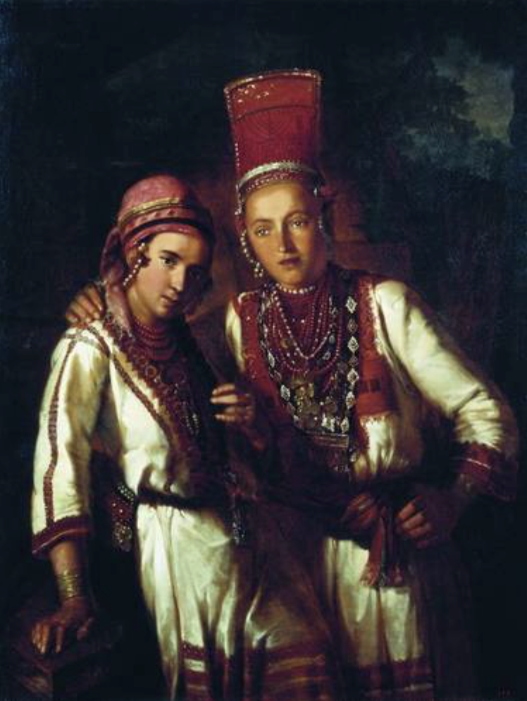
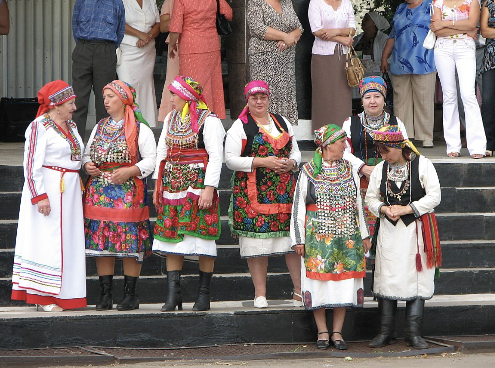
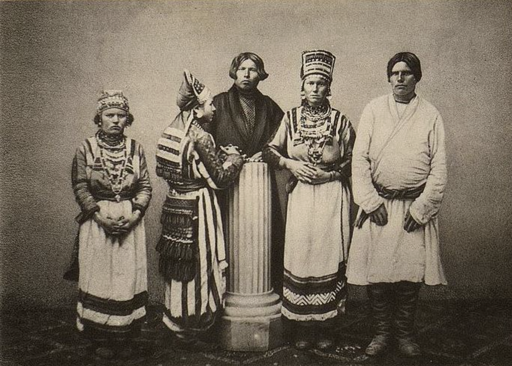

Мордва — финно-угорский народ, который делится на два субэтноса — мокшане (мокша) и эрзяне (эрзя).
Каждый из двух мордовских субэтносов имеет собственный язык: мокшане — мокшанский, эрзяне — эрзянский, оба они относятся к финно-волжской группе уральской семьи языков и имеют статус литературных. Считается признанным существование некогда единого мордовского праязыка, который лишь в середине I тыс. н. э. распался на мокшанский и эрзянский. Лингвистами подмечено, что в языке эрзя преобладают заимствования из русского языка, а в мокшанском — из тюркских (в основном татарского, чувашского). Оба мордовских языка распадаются на ряд диалектов и смешанных говоров, локализованных в различных районах проживания мордвы. Мордовская письменность существует со второй половины XVIII века и в настоящее время использует кириллицу, алфавит мордовской письменности совпадает с русским.
В быту и духовной и бытовой культуре у мокши и эрзя прослеживаются значительные различия, а также наблюдается близость мокши к марийцам, а эрзя — к прибалтийским финнам.
Комплекс одежды Традиционный облик мокшанки подразумевает ношение рубашки и штанов, причём рубашка у неё спускается не до пят, как у эрзянки, а поддерживается у пояса; поверх рубашки эрзянка носит выбитый кафтан (шушпан), похожий на соответственный наряд черемиски. На голове эрзянки носят рогообразные круглые кокошники сороки, а у мокшанок головной убор ближе к черемисскому и заменяется иногда полотенцем или шалью, повязываемой в виде чалмы (головной убор мордовок значительно варьирует в каждой группе по местностям). Мокшанки не носят также «пулая» — назадника, украшенного бисером и длинной бахромой и распространённого у эрзянок.
В XIX веке исследователи отмечали, что мордва живёт лучше других народностей в тех же местностях; в Саратовской губернии, например, задолженность её меньше, чем чуваш, русских и татар. Во внешнем быту мордвы, её жилищах, способах земледелия и т. д. сохранилось мало оригинального, хотя в старину мордовские селения и избы отличались от русских большей разбросанностью и постановкой избы посреди двора или, если и на улицу, то окнами только в сторону двора. К специально-мордовским промыслам принадлежат в некоторых местностях, производства поташа, конопляного масла, домашних сукон (любимый цвет мордвы — белый). К искусству мордва равнодушнее чуваш и черемис, у которых, например, многие предметы украшают резьбой; только мордовские женщины не менее заботятся об украшении своего костюма и старательно вышивают свои рубашки и головные уборы. В свадебных обрядах и обычаях мордвы сохранились многие черты старины, отголоски старинного брачного и родового права. В давние времена практиковалось многожёнство. Нередко мальчиков женили на взрослых девушках, чтобы взять в дом работницу.
Переживанием родового быта является также культ предков, остатки которого можно видеть в подробностях погребальных обычаев, поминок. Интересным является сохранившийся вплоть до XX века обычай при основании нового кладбища первого покойника хоронить стоя и с посохом в руках. После этого его дух становился хозяином погоста (калмонь кирди — «покровитель кладбища» или калмо-ава — «мать кладбища»). У мордвы сохранились языческие поверья, которые по своей отрывочности и сбивчивости не позволяют восстановить точнее древнюю мордовскую мифологию. Известно, что мордва почитала много пасов (мокш. павас) — богов, ава — духов, отцов, кирьди — хранителей, которые представлялись антропоморфно и отчасти слились с русскими представлениями о домовых, водяных, леших и т. д. Предметами поклонения были также солнце, гром и молния, заря, ветер и т. д. Можно различить следы дуализма — антагонизма между Шкаем (небом) и Шайтаном, которыми созданы, между прочим, Алганжеи (носители болезней). У мордвы сохранились ещё местами моляны — остатки прежних языческих жертвоприношений, отчасти христианские праздники приурочены к ним.
В эрзянских селениях особо было развито черничество. Чернички — это молодые девушки, покрывшиеся чёрным платком и навсегда отказавшиеся от замужества; они запираются в кельях, чтобы молиться и читать богоугодные книги. Однако у мордвы черники не пользуются лестной репутацией. Среди них выходили проповедники новых учений, поскольку сектантство очень было распространено среди мордвы.
Основное развитие имело устное творчество. Одним из ранних представителей мордовского сказительного искусства была Ефимия Петровна Кривошеева. В конце 1920-х годов появились журналы «Мокша» на мокшанском языке и «Сятко» на эрзянском; письменная литература стала развиваться с 1930-х годов.
Картинки

Две мордовки в национальных костюмах на картине 1842 года.

Мокшанки в национальных костюмах  Мордовская семья из Казанской губернии, 1870 год